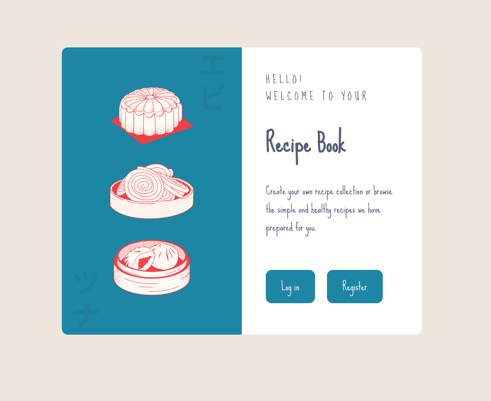

Projects
Project Pokedex
A small web application with HTML, CSS, and JavaScript that loads data from an external API, and enables the viewing of data points in detail.
See the live webpagecheck out the code
Meet App
A serverless, progressive web application (PWA) built with React using a test-driven development (TDD) technique. The application uses the Google Calendar API to fetch upcoming events.
See the live webpagecheck out the code
Recipe Book
Working with Python-based Django, a full-stack web application using the Django development server. Deploy the application using Heroku, with a Postgres database at the backend, HTML, and CSS-based rendered pages at the frontend and Python-based Django as your web application framework.
See the live webpagecheck out the code
My Flix App - Frontend (React Version)
Using React, build the client-side for an app called myFlix based on its existing server-side code (REST API and database).
See the live webpagecheck out the code
My Flix App - Frontend (Angular Version)
Using Angular, build the client-side for an app called myFlix based on its existing server-side code.
See the live webpagecheck out the code
My Flix App - Backend
This API provide users with access to information about different movies, directors, and genres. Users are able to sign up, update their personal information, and create a list of their favorite movies.
It's deployed via Herokucheck out the code
Chat App - Mobile
This is a React Native chat application that leverages Firebase for real-time messaging. Users can send text messages, images, and share their location. The project integrates popular libraries for various functionalities.
check out the code